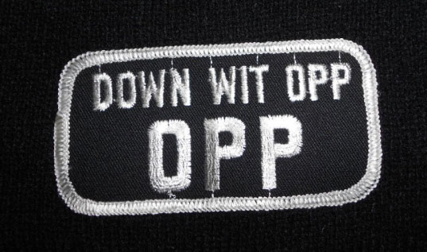
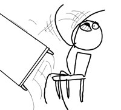
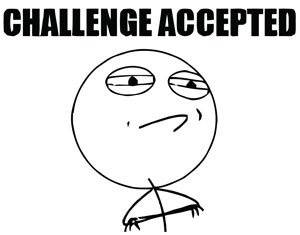
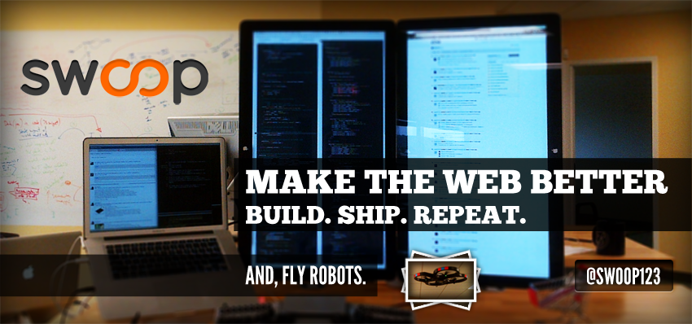

OPPJS - OPP Yeah You Know Me!
Other People's Pages

James Morrin @treasonx
3PJS or Thirdparty JavaScript
What Is OPPJS
-
Thirdparty JavaScript Or 3PJS
Your app runs on pages you have no control over.
-
Installation Is Simple
Users Just Add A Script Tag!
-
Companies Using OPPJS
Disqus, Olark, Swoop
Challeges
OPPJS is not as simple as normal JavaScript Development
-
You have no control over how the host page is written or served!
-
You are never on the same domain!
-
There are other Thirdparty script on the page. They usually suck!
-
It's impossible to test everything before going to production.
OPPJS Dev Goals
The world of the OPPJS dev is hostile and ugly. The OPPJS dev should not contribute to the ugliness!
-
Isolate your code. Do not leak / create globals!
-
Do not modify your environment!
-
Do not hog the JavaScript thread. Async Everything!
-
Never Break the Host Page!
-
If you fail, fail silently and leave no trace.
WAT! Really?!
You will encounter some crazy bugs caused by "modifications" on the host page.
-
JSON.stringify always returns null.
#WAT
-
Date.prototype.getTime returns "Tuesday".
#WAT
-
This sort of thing is common.
True Story Bro

How To Survive!
With so many crazy things that could happen, how do you survive?
- Analytics
- Isolation
- Defensive Coding
- Detect Insane Environments!
- Test EVERYTHING!
- Be Better Than The Rest

Interested in OPPJS Development?

←
→
/
#